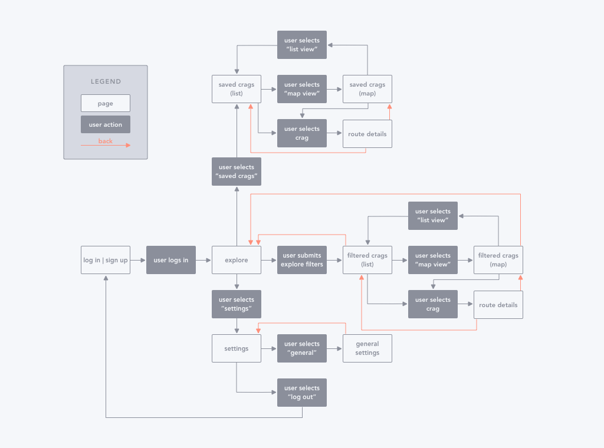
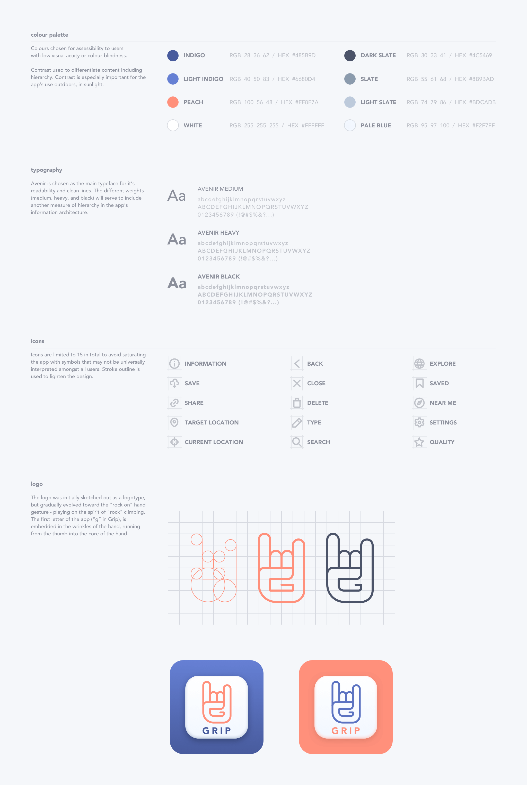
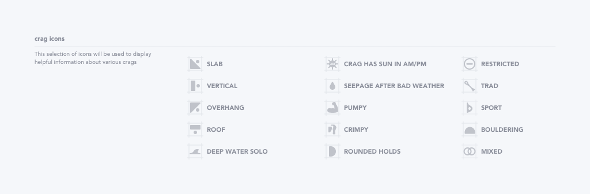
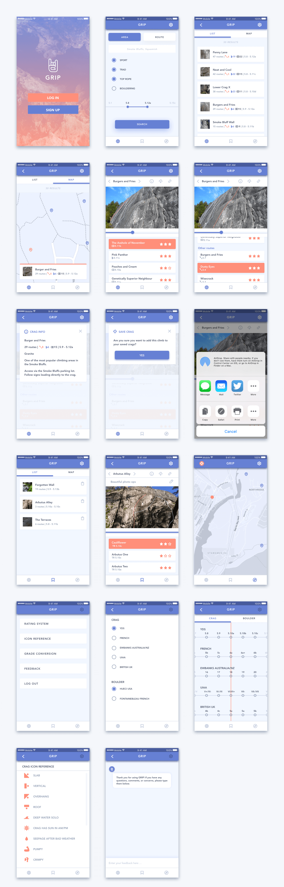

Grip
Project objective
The objective of the GRIP mobile app is to serve as a digital guidebook for outdoor climbers. This app concept came to me 3 years ago when I wanted to improve my design skills with a personal UX/UI project (Grippii). Back then, I designed the app to act as a social network for rock climbing enthusiasts. At the end of the project, I realized that from a practical standpoint, the app was trying to do too much. I didn’t want to design a climbing experience that revolved around a digital interface (i.e. researching, making plans, chatting, posting photos). Thus, I discerned the most value of the app concept came from the guide portion as it would eliminate the need for physical books in different languages with different grading systems.
Research
I began my design process by examining existing climbings apps. While there are many emerging apps in the marketplace for tracking climbs, I focused on mobile guidebooks to assess the sort of features and functions I’ve been exploring with Grip. When I first began the design process for this app concept, there were only a couple of competitors in the app store with dense, awkward UIs. A few years later, there are a handful of solutions with far better UI design and functionality. Nevertheless, there are components I personally could see improvement on and have decided to incorporate within Grip. I included some of my critique and observations for a few climbing apps below.
*When I use the word “topos” in this project, I am referring to a graphical representation of a climbing route
User Flow
I came away from my research with the challenge of incorporating the important details found in physical guidebooks within a clear format for a small field of real estate (mobile screen). I made a flowchart to organize my thoughts on how a user would navigate through different features of the app. At this point in the app concept, a user would only be able to submit a filtered search query for climbing crags and save specific routes.

Wireframes
After fleshing out the necessary functions and page interactions conceptually, I started to design some wireframes.
Branding
Before I invested more time into the visual details of the app, I decided to work out the branding so as to maintain some consistency and cohesion in the app’s design. Years ago, I named this app concept Grippii, playing on the action most used in rock climbing (gripping rock), but since then, have shortened the name to Grip.

Mockups
Employing my wireframes and branding guidelines for direction, I began to craft a new set of mockups.
User Testing
With my collection of mockup screens, I set about to user test Grip with real climbers. Below are summarized notes from a couple of my testing sessions.
Rick
M, 10 years climbing experience
- prefers to using books over apps because apps miss certain details and have a poor layout
- would like details such a access length, public transportation, kid-friendly, wet/dry weather climbing
- switch from satellite to map view
- thinks organizing route on crag from A-Z and R-L to be redundant, better to keep L-R
Lauren
F, 19 years climbing experience
- uses books with the exception of her phone on a multi-pitch
- doesn’t like to require reception to view mobile route details
- needs details such as crag closures due to falcons nesting (for example)
- likes the ability to add notes to routes such as personal grading and whether it was climbed onsite/flash/redpoint (climbing terminology)
After user testing, I made a list of the most important updates to improve Grip:
- organize routes on crags by L-R and have topos selectable
- side scroll crags in a given area
- include more details of crags with climbing icons found in guidebooks
Mockups V2
I expanded my set of icons to give the user more context about the kind of climbing involved for their crag of interest.

Below is the latest set of screens I’ve created, with some new updates based on user feedback.

Next Steps
As I’ve been casually revising this app for about 3 years now, I don’t see an end point in the near future. I find it quite fun to apply new ideas and skills and insights to old work.
Already, I’m mulling over a couple questions for my next iteration:
- Once a crag result from a filter is saved, does the saved item show the filtered specs or the general specs of that crag?
- Is it enough to provide info about a crag or would specific route betas be a valuable addition?
I’ve already begun to prototype this app using Origami Studio, and will release a video of the screen flow once I’ve settled on suitable solutions to the aforementioned questions.


{kind=link}
{kind=link}
{kind=link}
{kind=link}
{kind=link}
{kind=link}
{kind=link}
{kind=link}
{kind=link}